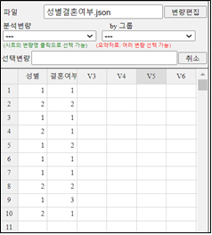
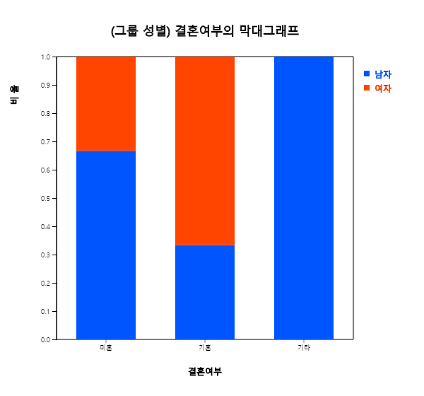
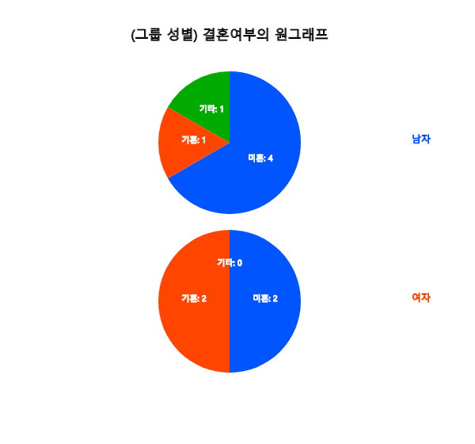
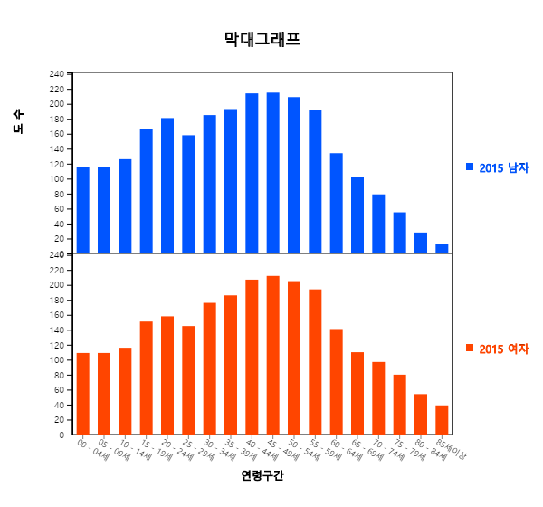
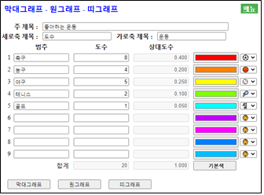

- 범주형 자료인 경우에 막대그래프, 원그래프, 띠그래프를 그려 분석한다.
- 시간에 따라 측정된 자료는 꺽은선그래프를 그려 분석한다.
- 단어로 이루어진 문자 형태의 자료는 단어구름을 그려 분석한다.
2.1 범주형 데이터의 그래프
한 학급의 남녀 학생이 몇 명인지 또는 한 회사의 사원 중에서 미혼자와 기혼자가 몇 명인지 등을 조사한 데이터를 범주형 데이터라 한다. 범주형 데이터 시각화에는 막대그래프, 원그래프, 띠그래프, 꺾은선그래프 등이 이용된다.
막대그래프는 각 범주별 자료의 도수를 직사각형 막대의 높이로 나타낸 것이다. 범주형 자료라는 것을
강조하기 위하여 막대사이의 간격을 띄어 놓는다.
[그림 2.1] 좋아하는 운동의 막대그래프
원그래프는 각 범주의 도수가 전체 자료에서 차지하는 비율을 원조각으로 나누어 표시한 그래프이다.
비율의 비교를 잘 할 수 있도록 시계 방향으로 가장 큰 범주의 원조각부터 순서대로 차례로 그린다.
[그림 2.2] 좋아하는 운동의 원그래프
띠그래프는 원그래프의 변형 형태로 각 범주의 도수가 전체 자료 중에서 차지하는 비율을
사각형 조각으로 나누어 표시한 그래프이다. 범주의 값이 가장 큰 순서부터 정렬할 수도 있으나 원그래프와
구별하기 위하여 자료의 범주 순서대로 사각형 조각을 그린다.
[그림 2.3] 좋아하는 운동의 띠그래프
원시 데이터의 그래프
🎲 예 2.1
표 2.1과 같은 원시데이터를 『eStat』를 이용하여 막대, 원, 띠그래프를 그려보자.
표 2.1 성별 원시 데이터
남
여
남
여
남
남
남
여
여
남
풀이
표 2.1과 같은 원시데이터를 『eStat』 시트의 V1열에 입력을 하고, 변량명을 '변량편집'을 이용하여 '성별'을 [그림 2.4]와 같이 입력한다.
[그림 2.4] 원시 데이터의 입력
마우스로 변량명 '성별'을 클릭하면 선택변량 박스에 첫 번째 변량의 선택을 의미하는 'V1'이 나타나고 기본적으로 선택된 수직형 막대그래프가 [그림 2.5]와 같이 그려진다. 즉 원시 데이터의 남학생 수 6명과 여학생수 4명을 시스템이 세어서 내부적으로 도수분포표를 만든 후 막대그래프를 그린 것이다.
[그림 2.5] 성별 막대그래프
현재 성별 변량이 선택된 상태에서 원그래프 아이콘과 띠그래프 아이콘을 클릭하면 다음 그래프가 나타난다.
[그림 2.6] 성별 원그래프
[그림 2.7] 성별 띠그래프
그룹 있는 원시 데이터의 그래프
🎲 예 2.2
표 2.2과 같이 성별(1:남자, 2:여자)과 함께 결혼여부(1:미혼, 2:결혼, 3:기타)를
조사하였다. 『eStat』를 이용하여 남자 여자별로 막대그래프, 원그래프, 띠그래프,
그려 두 그룹의 특징을 비교하여 보자.
표 2.2 성별 결혼여부 조사
성별
결혼여부
1
1
2
2
1
1
2
1
1
2
1
1
1
1
2
2
1
3
2
1
풀이
『eStat』 시스템에서 시트에 성별과 결혼여부 데이터를 [그림 2.8]과 같이 입력하고 '변량편집'을 이용하여 변량명 '성별'을 입력하고, 변량값 1과 2에 대한 변량값명 '남자'와 '여자'를 입력한다. 같은 방법으로 변량명 '결혼여부'를 입력하고 변량값 1, 2, 3에 대한 변량값명 '미혼', '기혼', '기타'를 입력한다. 이와 같이 변량값명에 대한 편집을 한 데이터는 JSON 형식으로 저장(아이콘 클릭)하여야 정보를 잃어버리지 않게 된다. 다시 불러올 때도 JSON 형식으로 불러오는 아이콘 을 클릭하여야 한다.

[그림 2.8] 성별과 결혼여부 데이터의 입력
마우스로 '결혼여부'와 '성별' 변량명을 차례로 클릭하면 [그림 2.9]와 같은 남녀별 결혼여부의 막대그래프가 같은 화면에 그려진다. 여기서 '성별'이 그룹변량이 된다.
[그림 2.9] 결혼여부에 대한 성별 막대그래프
이와 같이 그룹이 있는 막대그래프는 다른 변형 형태가 가능하다. 주 아이콘 밑에 있는 부 아이콘 리스트를 이용하여 10가지의 막대그래프를 그릴 수 있다. [그림 2.10]에서 [그림 2.13]은 각각 수직형 막대그래프의 '쌓는형', '비율형', '나란형', '양쪽형' 이고 [그림 2.14]에서 [그림 2.18]은 수평형 막대그래프의 '분리형', '쌓는형', '비율형', '나란형', '양쪽형' 이다.
[그림 2.10] 성별 결혼여부의 쌓는형 수직 막대그래프

[그림 2.11] 성별 결혼여부의 비율형 수직 막대그래프
[그림 2.12] 성별 결혼여부의 나란형 수직 막대그래프
[그림 2.13] 성별 결혼여부의 양쪽형 수직 막대그래프
[그림 2.14] 성별 결혼여부의 분리형 수평 막대그래프
[그림 2.15] 성별 결혼여부의 쌓는형 수평 막대그래프
[그림 2.16] 성별 결혼여부의 비율형 수평 막대그래프
[그림 2.17] 성별 결혼여부의 나란형 수평 막대그래프
[그림 2.18] 성별 결혼여부의 양쪽형 수평 막대그래프
『eStat』에서 원그래프와 띠그래프 아이콘을 클릭하면 남녀별 원그래프([그림 2.19]), 띠그래프([그림 2.20])이 나타난다. 각 그룹에서 어느 범주의 값이 전체 데이터 중에서 차지하는 비율이 많은지 쉽게 관찰할 수 있다.

[그림 2.19] 성별 결혼여부의 양쪽형 원그래프
[그림 2.20] 성별 결혼여부의 양쪽형 띠그래프
도수분포 데이터의 그래프
도수분포표 형태로 정리한 데이터도 『eStat』을 이용하면 쉽게 그래프를 그릴 수 있다. 데이터의 수가 많아지면 원시 데이터를 도수분포 데이터로 정리하는 것도 일반인에게는 쉬운 일이 아니다. 통계패키지의 주요 기능 중의 하나가 원시 데이터를 도수분포 데이터로 정리하여 주는 것이다.
대개 공공기관은 생산되는 통계에 관한 정보를 도수분포 데이터 형식으로 엑셀 파일로 다운받을 수 있게 하여준다. 예를 들어, 우리나라에서 매 5년마다 전 국민을 대상으로 인구 총조사(census)를 실시하여 구해지는 인구데이터는 통계청(http://kostat.go.kr) ⇨ 통계포탈(KOSIS) ⇨ 국내통계 ⇨ 인구·가구 사이트에서 엑셀 파일로 다운로드 받을 수 있다. 통계청의 인구 데이터는 대개 남녀별 인구, 지역별 인구, 연령대별 인구 또는 지역별 남녀별 인구 등의 범주로 정리 요약하여 공표한다.
많은 교과서에 있는 데이터는 위와 같은 도수분포 데이터이다.
🎲 예 2.3
2015년 우리나라의 연령대별 남녀 인구가 표 2.3과 같다. 『eStat』를 이용하여 남녀별 연령대 인구의
막대그래프, 원그래프, 띠그래프를 그려 그 특징을 알아보자.
표 2.3 2015년 연령구간별 남녀별 인구수 (출처: 통계청, 단위: 만명)
연령 구간
2015 남자
2015 여자
00 - 04
115
109
05 - 09
116
109
10 - 14
126
116
15 - 19
166
151
20 - 24
181
158
25 - 29
158
145
30 - 34
158
176
35 - 39
193
186
40 - 44
214
207
45 - 49
215
212
50 - 54
209
205
55 - 59
192
194
60 - 64
134
141
65 - 69
102
110
70 - 74
79
97
75 - 79
55
80
80 - 84
28
54
85세 이상
13
39
풀이
표 2.3의 데이터를 『eStat』 시트의 V1, V2, V3 열에 입력하고 변량명을 '연령구간', '남자', '여자'로 입력한다.
이 데이터는 [Ex] 아이콘 > 01Korean > 023요약_2015남녀별인구.csv로 불러올 수도 있다.
[그림 2.21]과 같이 차례로 V1, V2, V3 변량을 선택하면 [그림 2.22]와 같은 막대그래프가 그려진다.
[그림 2.21] 분석변량 선택박스

[그림 2.22] 연령구간별 남녀 인구의 분리형 세로 막대그래프
이와 같이 그룹이 있는 막대그래프는 다른 변형 형태가 가능하다. 주 아이콘 밑에 있는 부 아이콘울 이용하여
10가지의 막대그래프를 그릴 수 있다. 수직형 막대그래프의 '쌓는형'([그림 2.23]), '비율형'([그림 2.24]), '나란형'([그림 2.25]), '양쪽형'([그림 2.26])이고, 수평형 막대그래프로서 '분리형'([그림 2.27]), '쌓는형'([그림 2.28]), '비율형'([그림 2.29]), '나란형'([그림 2.30]), '양쪽형'([그림 2.31]) 이다.
[그림 2.23] 연령구간별 남녀 인구의 쌓는형 세로 막대그래프
[그림 2.24] 연령구간별 남녀 인구의 비율형 세로 막대그래프
[그림 2.25] 연령구간별 남녀 인구의 나란형 세로 막대그래프
[그림 2.26] 연령구간별 남녀 인구의 양쪽형 세로 막대그래프
[그림 2.27] 연령구간별 남녀 인구의 분리형 수평 막대그래프
[그림 2.28] 연령구간별 남녀 인구의 쌓는형 수평 막대그래프
[그림 2.29] 연령구간별 남녀 인구의 비율형 수평 막대그래프
[그림 2.30] 연령구간별 남녀 인구의 나란형 수평 막대그래프
[그림 2.31] 연령구간별 남녀 인구의 양쪽형 수평 막대그래프
[그림 2.31]의 양쪽형 수평 막대그래프는 연령대별 남녀별 인구 피라미드라고 부른다. 현재 우리나라는 항아리 형태의 연령별 인구 구조를 가지고 있다. 즉, 현재 40세에서 50세의 장년층의 인구가 많고 노령 인구가 향후 점점 증가하며, 출생아의 수는 점차로 줄어든다. 경제 생활인구가 줄어들며 노년층의 건강, 보험 문제가 향후 예견된다.
그룹이 있을 경우 원이나 띠그래프를 그려보면 그룹별 각 범주의 값의 차이를 비교할 수 있다. 꺾은선그래프를 선택하면 각 그룹별 꺾은선이 한 그래프에 나타나게 된다. 두 개의 그룹을 같은 스케일에서 비교할 수 있다. 이와 같이 그룹이 있는 경우 각각의 그래프는 데이터가 가지는 특성을 서로 다른 형태로 관찰할 수 있기 때문에 여러 가지 그래프를 모두 그려 관찰하는 것이 좋다.
『eStatU』를 이용한 그래프
도수분포 데이터의 경우 『eStatU』를 이용하여 그래프를 그릴 수 있다.
🎲 예 2.4
초등학교 한 학급 학생 20명을 대상으로 좋아하는 운동을 조사한 도수분포표가 표 2.4와 같다.
『eStatU』을 이용하여 막대 , 원, 띠그래프를 그려보자.
표 2.4 초등학생의 좋아하는 과목의 도수분포표
운동
학생수
축구
8
농구
4
야구
5
테니스
2
골프
1
풀이
『eStatU』 메뉴에서 '막대그래프 – 원그래프 – 띠그래프'를 선택하면 [그림 2.34]와 같은 자료 입력창이 나타난다. '범주'와 '도수'를 입력하고 '주 제목', '세로축 제목', '가로축 제목' 원하는 제목을 입력한다. [막대그래프] 버튼을 클릭하면 [그림 2.35]와 같은 막대그래프가 나타난다. 원하는 범주의 색을 선택하여 다시 [막대그래프를] 그릴 수도 있다. 제일 오른쪽에 각 범주별 아이콘을 선택하고 그래프 아래의 '이모티콘'을 체크하여 막대의 이모티콘을 나나캘 수도 있다.

[그림 2.34] 『eStatU』 좋아하는 운동의 자료 입력
[그림 2.35] 『eStatU』 좋아하는 운동의 막대그래프
[원그래프] 버튼을 클릭하면 [그림 2.36]의 원그래프가 나타나고, [띠그래프] 버튼을 글릭하면 [그림 2.37]의 띠그래프가 나타난다.
[그림 2.36] 『eStatU』 좋아하는 운동의 원그래프
[그림 2.37] 『eStatU』 좋아하는 운동의 띠그래프
2.2 꺽은선그래프
시간에 따라 측정되는 자료는 꺾은선그래프(line graph)를 이용하여 많이 관찰한다. 꺽은선그래프는 월 또는 연도같은 시간을 X축으로 하고 다른 변량의 값을 Y값으로 하여 XY평면에 각 자료를 점으로 표시한 후 이를 선으로 연결한 것이다. 막대그래프와 유사하나, 연도별 수출액 등의 경우에는 시간에 따른 자료의 변화를 관찰할 수 있다.
🎲 예 2.5
1925년부터 2019년까지 대략 5년 간격으로 조사한 우리나라의 인구가 다음 표와 같다. 『eStat』
를 이용하여 꺽은선그래프를 그려보자.
표 2.5 우리나라의 인구 (통계청)
연도
인구수
1925
1902
1930
2044
1935
2221
1940
2355
1944
2512
1949
2017
1955
2150
1960
2499
1966
2916
1970
3144
1975
3468
1980
3741
1985
4042
1990
4339
1995
4455
2000
4599
2005
4704
2010
4799
2015
5106
2019
5178
풀이
이 데이터를 『eStat』의 변수 1과 변수2에 입력하고 변량명을 연도와 인구수로 한다.
꺽은선그래프 아이콘 을 클릭한 후 X변량을 '연도' Y변량을 '인구수'로 선택하면 [그림 2.38]과 같은 꺽은선 그래프가 그려진다.
[그림 2.38] 우리나라 인구의 꺽은선그래프
우리나라의 인구수에 대한 꺽은선그래프를 관찰하면 1925년부터 1944년까지 증가하다가 태평양전쟁과
한국전쟁의 여파로 1949년과 1954년에 많이 감소되었음을 알 수 있다. 그 이후 50년대 후반 베이비붐 기간에
계속 인구가 많이 증가하다가 1990년 이후 증가추세가 완만하여지고 2015년 이후에 이 추세는 더욱 완만하여 지고 있다.
자료수가 적을 경우에는 『eStatU』를 이용할 수 있다. 『eStatU』 주메뉴에서 '꺽은선그래프'를 선택하여 나타나는 [그림 2.39] 화면에
주제목, 세로축 제목, 가로축 제목을 입력하고 '꺽은선1'과 'X'에 데이타를 입력한후 [실행] 버튼을 누르면 같은 꺽은선그래프가 나타난다.
[그림 2.39] 『eStatU』 꺽은선그래프 자료입력
🎲 예 2.6
『eStat』은 여러 개의 시계열 자료에 대한 꺽은선 그래프를 그릴 수 있다. 1973년 이후 우리나라의
봄, 여름, 가을, 겨울 그리고 연 평균기온이 [Ex] ⇨ 01Korean ⇨ 024요약_계절별온도.csv 에 저장되어
있다. 꺾은선그래프를 이용하여 온도변화의 특징을 알아보자.
풀이
『eStat』 시스템에서 [Ex] ⇨ 01Korean ⇨ 024요약_계절별온도.csv 파일을 불러오면 [그림 2.40]과 같다.
[그림 2.40] 우리나라의 계절별 온도 데이터
꺾은선그래프 아이콘 을 클릭하고, 마우스로 '연도', '봄', '여름', '가을', '겨울'의 변량명을 차례로 누르면 [그림 2.41]과 같은 사계절 온도의 꺾은선그래프가 그려진다.
[그림 2.41] 우리나라의 계절별 온도 꺽은선그래프
그래프를 살펴보면 우리나라의 평균 기온이 점차로 올라가고 있음을 알 수 있다. 특히 겨울의 최근 몇 년 평균 기온이 과거와는 다르게 많이 올라갔음을 관찰할 수 있다. 이러한 연도별 데이터의 경우에는 꺾은선그래프가 데이터의 변화를 관찰하기 쉽다. 하지만 막대그래프도 사용될 수 있다.
2.3 단어구름
단어구름은 문자 자료의 정보를 시각적으로 표현한 것이다. 단어구름은 주어진 문장에 나타나는
모든 단어들의 빈도수를 조사하여 많이 나타난 단어의 중요성을 글꼴 크기, 기울기 또는 색상으로
잘 보이도록 표시한다.
🎲 예 2.7
표 2.6은 4차 산업혁명에 대한 위키백과의 설명이다. 『eStatU』을 이용하여 이 설명에 대한
단어구름을 그려보자.
표 2.6 산업혁명에 대한 위키백과의 설명
제4차 산업 혁명은 기술이 사회와 심지어 인간의 신체에도 내장되는 새로운 방식을 대표하는 디지털 혁명 위에 구축되고 있다.[10] 제4차 산업 혁명은 로봇 공학, 인공 지능, 나노 기술, 양자 프로그래밍, 생명 공학, IoT, 3D 인쇄 및 자율주행 차량을 비롯한 여러 분야에서 새로운 기술 혁신이 나타나고 있다.
세계 경제 포럼 암시자 슈왑(Klaus Schwab)의 저서 《제4차 산업 혁명》에서 이 4번째 혁명이 기술 발전에 의해 특징지어졌던 이전의 3가지 혁명과 근본적으로 다른 점을 언급하고 있다. 이러한 기술은 수십억 명의 사람들을 계속해서 웹에 연결하고 비즈니스 및 조직의 효율성을 획기적으로 향상시키며 더 나은 자산 관리를 통해 자연 환경을 재생산할 수 있는 커다란 잠재력을 가지고 있다.[11]
"제4차 산업 혁명 마스터 하기"는 스위스 Davos-Klosters에서 열린 세계 경제 포럼 연례회의 (World Economic Forum Annual Meeting 2016)의 주제였다.
풀이
『eStatU』 메뉴에서 '단어구름'을 선택하면 [그림 2.42]와 같은 자료 입력창이 나타난다.
여기에 표 2.6의 문장을 복사한 후 [실행] 버튼을 클릭하면 [그림 2.43]과 같은 단어 구름이 나타난다.
[단어구름]
[그림 2.43] 4차 산업혁명 설명에 대한 단어 구름
단어구름은 가장 두드러진 단어를 빠르게 인식하여 상대적인 중요도를 결정하는 데 유용하다. 예를 들면 정치 연설의 중요한 주제를 시각화 하든지, 소셜 미디어 소프트웨어에서 한 단어와 관련된 항목의 하이퍼링크를 결정하는 도구로 사용할 수 있다.